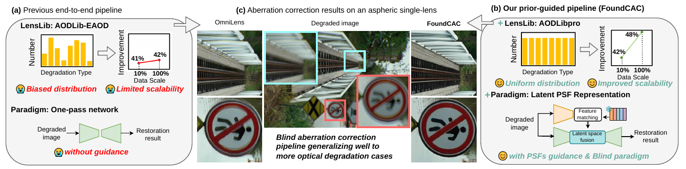
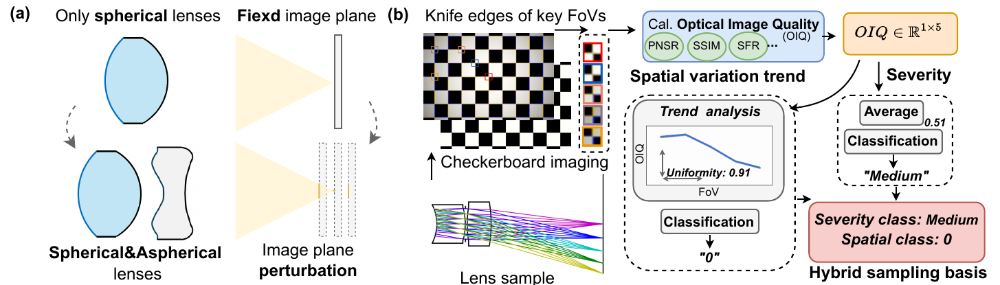
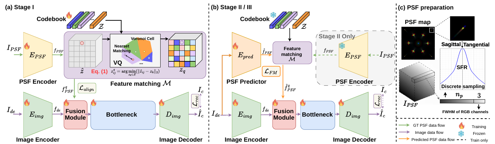
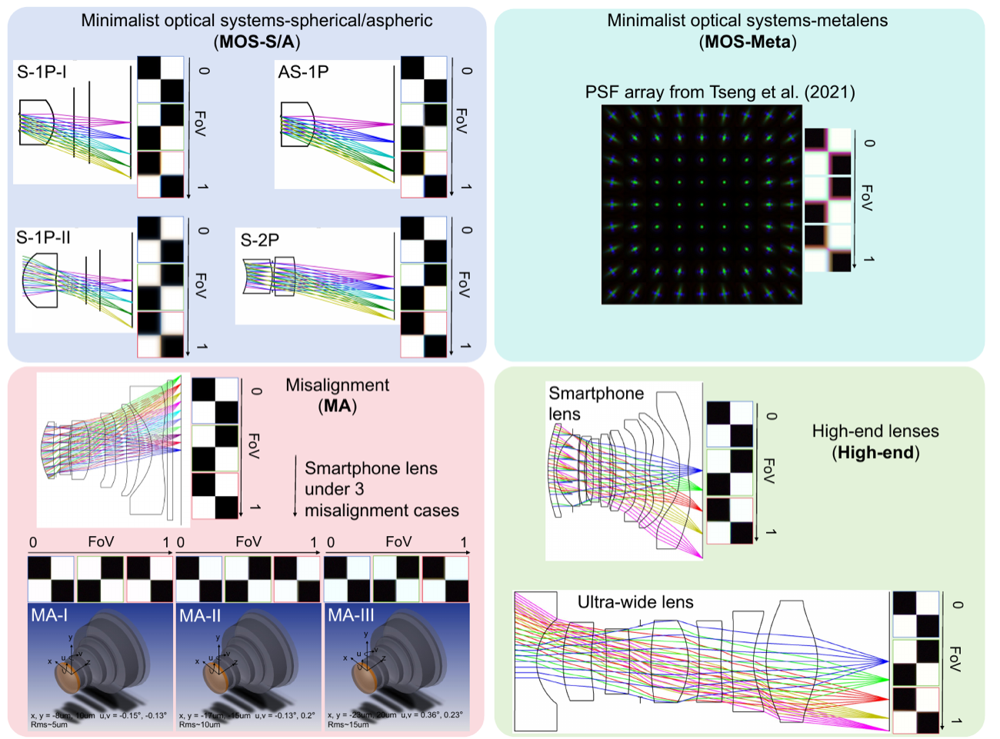
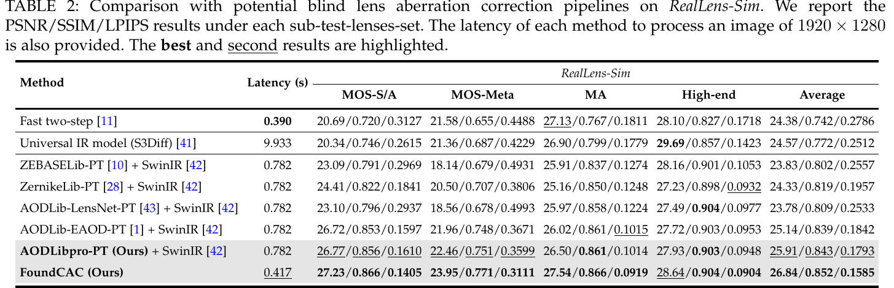
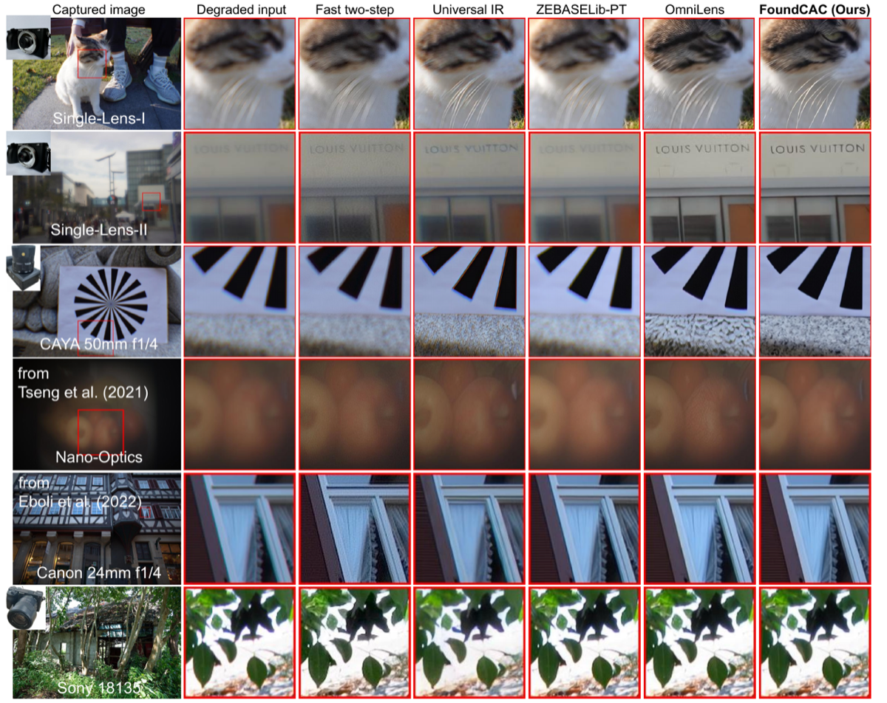
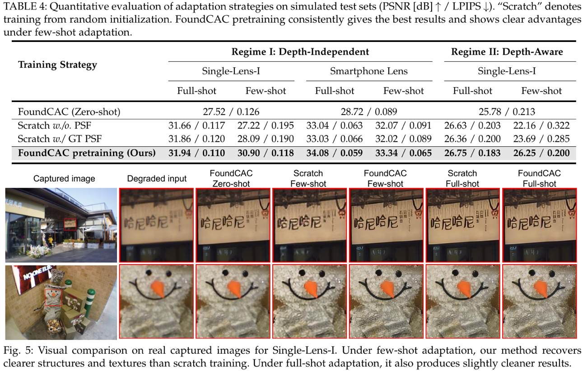
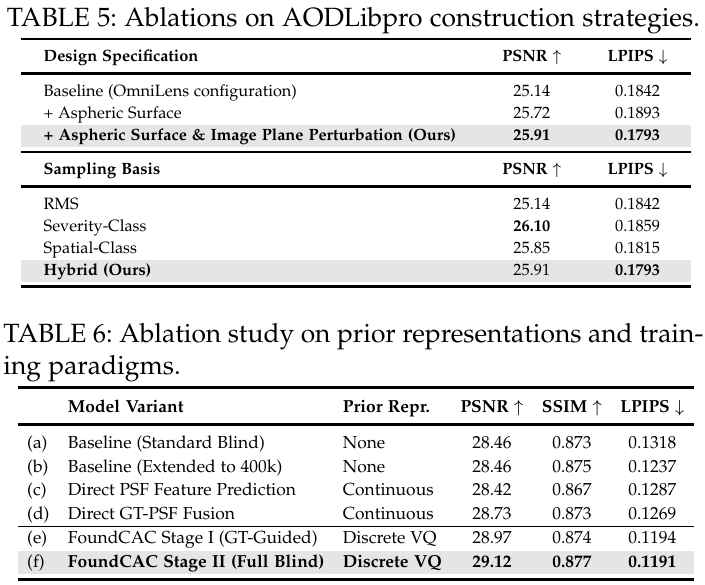

论文
OmniLens++（FoundCAC）：用几千个自动设计的镜头做预训练，把 PSF 压成离散码本，盲校正镜头像差

版本与发表：arXiv 2511.17126 的 v1–v3（2025-11）标题是 OmniLens++: Blind Lens Aberration Correction via Large LensLib Pre-Training and Latent PSF Representation，v4（2026-06-02）和 v5（2026-07-11）改成 Towards Blind Lens Aberration Correction via Large LensLib Pre-training and Discrete Degradation Priors，框架名也从 OmniLens++ 改成 FoundCAC。v5 的 arXiv 注释写着 "Accepted to 2026 IEEE International Conference on Computational Photography (ICCP)"。本页按 v5 写，v1 和 v5 方法上有实质差别（§4 第 9 条），引到 v1 的地方都会注明。Semantic Scholar 的接口当时限流，没能核对，会议信息以 arXiv 注释为准。
代码说明：论文给的地址是
zju-jiangqi/FoundCAC。仓库 2025-11-23 创建，到 2026-10 只有两次提交（最新8dd9099，2026-06-22），内容只有一个 README，写着 "Official implementation of FoundCAC (OmniLens++) framework."（repo/README.md）。论文承诺公开代码、Zemax 设计文件、PSF 数组和仿真图像，目前都不在这个仓库里。所以本页的代码分三类：(1) FoundCAC 自己的逻辑写成等价伪代码，出处行注明依据；(2) 仿真部分引用 DeepLens 原文。v1 的可复现性声明写的是 "the simulation component directly uses the open source DeepLens repository"，我取了 v1 提交前最近的快照473dfe8（2025-11-18，repo-deeplens-2511/），另外也克隆了当前 HEAD911bb9d（repo-deeplens/）做对照；(3) 码本量化引用前作 OmniLens 仓库（89dcbc7，repo-omnilens/）里 FeMaSR 的实现，论文的特征匹配损失 L_FM 引的就是 FeMaSR。后两类都是 FoundCAC 依赖或沿用的代码，不是 FoundCAC 本身的代码，不能证明论文真的照此实现。另外，Hugging Face 上有一个没被论文和仓库提到的数据集Strange97/OmniLens2，上传账号与 OmniLens 官方发布 AODLib-EAOD 的账号相同，里面有一个 3.59 GB 的AODLibpro_lens.zip。我按 HTTP Range 读了这个 zip 的目录，取出 4 个文件核对过（§4 第 2–3 条）。
专项定位：这篇放在「手机照片 → 相机画质：细节与质感迁移」专项里读（入口 phone2camera-2026）。专项要从真实目标相机 RAW 反向合成「伪 iPhone RAW」，其中一步是给目标相机 RAW 加上 iPhone 的光学退化。raw-degradation-sr-2026 用显示器图案实测手机的逐通道 SR 核；本文代表另一条路：从镜头设计出发光线追踪仿真 PSF。§6 讨论这条路能不能用在 iPhone 上、和实测核怎么取舍、能不能反过来模拟目标相机镜头。读者如果只关心像差校正或者去模糊训练数据，§2–§5 是完整的。
镜头库
EAOD 自动设计出大量镜头，加非球面和像面扰动，再按棋盘格成像算出的「严重程度 × 空间形态」分 18 类均匀抽样，成为 AODLibpro。
仿真
DeepLens 光线追踪：64 个径向视场 × 31 个波长的 PSF，按光谱响应叠成 RGB，按像素间距离散化，在 2K 图上分块卷积，再过传感器噪声和 ISP（参数没公开）。
离散先验
Stage I 用真值 PSF 图训练 VQ 码本和复原网络；Stage II 冻结码本，预测器只从退化图里「挑码字」，推理时不需要 PSF。
适配
Stage III 冻结码本，在目标镜头的成对数据上微调预测器和复原网络。少样本只用 5% 的数据和 5% 的迭代。
1. 出发点：盲像差校正卡在数据偏和没有先验
镜头像差来自设计上的取舍（极简镜头、手机镜头为了体积放弃了部分校正）和制造装配误差。它造成的模糊有两个特点：随视场变化（中心和边缘的 PSF 不一样），而且形态取决于光路，不只是一个「模糊程度」。后处理校正分两类：非盲方法要先标定目标镜头的 PSF，换一颗镜头就要重来一遍；盲方法只看拍到的图，对没有光学背景的用户更友好。
近两年的主流盲方法是「镜头库预训练」（LensLib-PT）：准备一个覆盖各种像差的镜头库，对每个镜头仿真出成对的退化图和清晰图，训练一个通用网络，指望它能泛化到没见过的镜头。前作 OmniLens 用 EAOD（进化式自动光学设计）批量设计镜头，建了 AODLib-EAOD 库。论文 §1、§3.1 认为这条路有两处瓶颈：
- 数据偏，规模加了也没用。 AODLib-EAOD 的设计规格不全（只有球面、像面固定），抽样又只按平均 RMS 弥散斑半径这一个标量。RMS 既描述不了退化怎么随视场变化，也不能准确反映严重程度。Fig. 16(c) 举了一个例子：两颗平均 RMS 分别是 128.9 µm 和 124.2 µm 的镜头，一颗是「中心和边缘都糊、中间清楚」，另一颗是「中心清楚、边缘糊」。结果是某些退化类型在库里结构性缺失，数据从 10% 加到 100%，提升只从 41% 涨到 42%（Fig. 1a）。
- 网络没有物理先验。 表 1 的预实验里，把真值 PSF 喂给网络当引导（非盲）能从 28.46 涨到 28.73 dB；可是盲设定下拿不到 PSF。直接从退化图回归 PSF 只有 28.25，比不用 PSF 还差；回归 PSF 的隐特征是 28.42，也没超过基线。作者的解释是连续隐空间没有边界，网络很难在没见过的镜头上预测出有效的退化表示。
本文的两个对应改动：数据上扩充设计规格、改用「严重程度 + 空间形态」的混合抽样基；模型上把 PSF 先压进一个离散 VQ 码本，盲推理时把「回归连续特征」换成「检索离散码字」。v5 又加了 Stage III：冻结码本做少样本适配。
PSF（点扩散函数）
一个理想光点经过镜头后在像面上摊开的光斑。像差越大光斑越大越歪，不同视场、不同波长的 PSF 都不同。
视场（FoV）
像面上某点离光轴的位置。本文的「64 个视场」是从中心到边缘的 64 个径向位置，默认镜头旋转对称。
LensLib-PT
镜头库预训练：用大量镜头的仿真数据训练一个通用校正网络，测试时直接用于没见过的镜头。
EAOD
前作 OmniLens 的进化式自动光学设计算法，输入规格（片数、视场、F 数等），自动搜出能制造的镜头。
AODLib-EAOD / AODLibpro
前者是前作按 RMS 抽样的镜头库；后者是本文扩充规格、按混合基均匀抽样后的新库。
OIQ
光学成像质量分：PSNR、SSIM 和 SFR 三项归一化后加权，范围 0–1，越大越清楚。
SFR
空间频率响应：用刀口边缘测出的对比度随频率下降的曲线，是 MTF 的一种测法。
空间均匀度 US
5 个视场 OIQ 的变异系数映射到 0–1，越大说明中心和边缘画质越接近。
VQ 码本
一组可学习的向量。连续特征被替换成离它最近的那个向量，于是特征只能取有限个值。
LPR
Latent PSF Representation：本文用 VQ 码本表示的 PSF 隐表示，当作退化先验。
零样本 / 少样本 / 全量适配
不微调直接用；只用 5% 目标镜头数据微调；用全部目标数据微调。
MOS / MA
极简光学系统（单片、双片或超构透镜）；装配失调（偏心和倾斜）。都是 RealLens-Sim 测试集里的子类。
2. 方法：先造一个不偏的镜头库，再把 PSF 变成可检索的码字
2.1 AODLibpro：规格怎么扩、按什么抽样
镜头源。EAOD 本身照搬前作，本文只加了两种规格（Fig. 2a、附录 7.1）：
- 非球面：给镜头参数加高阶非球面系数，EAOD 的光线追踪扩展到非球面（附录 Eq. 5 是标准偶次非球面公式）。
- 像面距离扰动：对 EAOD 优化好的镜头，以概率 γ = 25% 把像面在景深范围内挪一下，生成变体。扰动幅度由景深公式约束：
—— 翻译: f 是焦距，F 是 F 数，L 是像距，δ 是允许的弥散圆直径（本文取 24 µm）。ΔL₁、ΔL₂ 是前后景深，像面只在 [−ΔL₁, ΔL₂] 里挪，保证挪完以后焦面变了、但图像仍算「对上焦」。挪像面会改变哪一圈视场最清楚，于是能造出「中间清楚、中心和边缘糊」这类新的空间形态。
混合抽样基（§3.2、附录 7.2）。不看设计指标，直接看成像结果：对每颗镜头仿真一张棋盘格，从中心到边缘取 5 个刀口块，每块算一个 OIQ：
—— 翻译: 把 PSNR 除以 50、SSIM 平移缩放，各自压到大约 0–1；OIQE 是这颗镜头的 SFR 除以无像差镜头的 SFR。三项按 4:3:3 加权，得到一个 0–1 的画质分。举例：某视场 PSNR 25 dB、SSIM 0.8、OIQE 0.6，则 OIQ = 0.4×0.5 + 0.3×0.6 + 0.3×0.6 = 0.56。
5 个视场的 OIQ 平均值决定严重程度：Fig. 8 在整个镜头源的直方图上切两刀（目测约在 0.45 和 0.6），分成 Strong / Medium / Mild 三档。空间形态看 5 个 OIQ 的变异系数：
—— 翻译: 5 个视场画质的离散程度除以平均画质，再用指数映射成 0–1 的均匀度。α = 0.85 时，U_S 大于 α 要求 CV 小于 ln(1/0.85)/5 ≈ 3.3%，也就是 5 个视场的画质几乎一样，才算「空间均匀」。例如 OIQ 从中心到边缘是 0.60、0.58、0.55、0.50、0.45，CV ≈ 0.11，U_S ≈ 0.58，属于不均匀。
不均匀的镜头再按「最差的视场在哪」和「是否单调」分成 5 类（Fig. 9）：1 类从中心到边缘单调变差；2 类中心最差；3 类中间某圈最差；4 类边缘最差且中心最好、但中间不单调；5 类边缘最差但中心也不是最好。加上 0 类「均匀」，共 6 类。3 档 × 6 类 = 18 个子类，每类抽 m₁ 个进训练集、m₂ = 3 个进测试集。正文写 m₁ = 200，即 3600 个训练镜头、54 个测试镜头，二者不重叠（§4.1）。
等价伪代码 — 非原文逐字；依据论文 §3.2、附录 7.2 的 Eq. 7–9 与 Fig. 8–9（官方未发布代码）
def oiq(deg_patch, gt_patch): # 附录 Eq. 7
psnr, ssim = PSNR(deg_patch, gt_patch), SSIM(deg_patch, gt_patch)
oiqe = SFR(deg_patch) / SFR(gt_patch) # 相对无像差镜头的 SFR 比
return 0.4 * psnr / 50 + 0.3 * (ssim - 0.5) / 0.5 + 0.3 * oiqe
def classify(lens, checker_gt, alpha=0.85, cuts=(0.45, 0.60)): # cuts 为 Fig. 8 目测值
deg = simulate(lens, checker_gt) # DeepLens 仿真棋盘格
q = [oiq(crop(deg, k), crop(checker_gt, k)) for k in knife_edges_center_to_edge(5)]
severity = "Strong" if mean(q) < cuts[0] else "Medium" if mean(q) < cuts[1] else "Mild"
us = exp(-5 * std(q) / mean(q)) # Eq. 8–9
if us > alpha: spatial = 0 # 均匀
elif all(diff(q) < 0): spatial = 1 # 中心→边缘单调变差
elif argmin(q) == 0: spatial = 2 # 中心最差
elif argmin(q) in (1, 2, 3): spatial = 3 # 中间某圈最差
elif argmax(q) == 0: spatial = 4 # 边缘最差、中心最好
else: spatial = 5 # 边缘最差、中心不是最好
return severity, spatial
# 18 个子类各抽 m1 个训练、m2=3 个测试；正文 m1=200，Fig. 6(a) 柱高约 180（§4 第 2 条）
library = {c: sample(lenses_in(c), m1 + 3) for c in product(SEVERITY, range(6))}
伪代码里判断 1 类和 4 类的先后顺序是我补的：「单调变差」同时满足「边缘最差、中心最好」，论文没说两条规则冲突时归哪一类。
覆盖哪些像差、多严重。AODLibpro 不按赛德尔像差（球差、彗差、像散、场曲、畸变、色差）分类，只按成像结果的严重程度和空间形态分类。色差被明确排除在分类之外（附录 7.2、Fig. 10）：作者把 OIQ 的通道间均匀度当作色差指标分 5 档，发现模型在各档上的 PSNR 没有规律；又因为 EAOD 没有胶合双片的设置，对色差几乎不加约束，训练集里有相当一部分样本色差明显（Fig. 11）。Hugging Face 上那份数据的文件名标注了规格。按带标注的那部分统计：1–6 片，文件名里的 fov 取 20–40（单位与是全视场还是半视场没有说明），F/2.0–F/4.75，像高 14 mm，总长 33.4 / 48.5 / 76.9 mm 三档，带非球面标记的 489 个、不带的 918 个。RMS 弥散斑半径（文件名 rms 字段，按 Fig. 16 的 µm 量级推断单位是 mm）中位数 0.103，小于 0.02 的只占 3.1%，小于 0.01 的只占 0.8%。这是一个以「像差很大的简易镜头」为主体的库（§6 会用到这个结论）。

2.2 仿真：DeepLens 怎么算 PSF、怎么分块卷积，域和传感器怎么处理
v5 附录 8.1 对仿真只写了一段话，整理成五步：
- 把每个镜头的设计文件（Zemax 或参数表）读进 DeepLens，光线追踪算 64 个视场 × 31 个可见光波长的 PSF。
- 按像高从传感器库（4 µm−2K、8 µm−2K、12 µm−2K、16 µm−2K）里选最接近的一个，按像素间距离散采样 PSF。
- 按传感器的波长响应把 31 个波长的 PSF 叠成 RGB 三通道，得到每个视场、每个通道的 PSF 数组。
- 为了用 2K 的公开高清数据集，对传感器分辨率和像素尺寸做了「等效下采样」，统一成 2K。
- 用 PSF 分块卷积把清晰图变成退化图，「同时也考虑了传感器 ISP 和噪声，和大多数成像仿真流程一样」（引 [6]、[23]，即 Chen 等的 TOG 2021 与 ICCV 2021）。
第 3 步可以写成：
—— 翻译: 视场半径 r 处、颜色通道 c 的 PSF，是 31 个波长的单色 PSF 按该通道的光谱响应 S_c(λ) 加权平均。论文只说「按波长响应叠加」，没给响应曲线来自哪台传感器，这个公式是我按文字整理的。R、B 两个通道的 PSF 中心位置不同，这就是横向色差；形状不同，就是轴向色差。
PSF 怎么算。DeepLens 的 GeoLens.psf 是几何光学（非相干）PSF：从物点发出 spp 条光线（2025-11 快照里默认 16384 条），追到传感器面，再按像素间距把落点「splat」到 ks×ks 的格子上，最后归一化：
repo-deeplens-2511/deeplens/geolens.py:L953-L973 — 单波长几何 PSF：物点采样光线 → 追到传感器 → 按像素间距积分 → 归一化（DeepLens 2025-11 快照，非 FoundCAC 代码）
# Sample rays. Ray position in the object space by perspective projection
depth = points[:, 2]
scale = self.calc_scale(depth)
point_obj_x = points[..., 0] * scale * sensor_w / 2
point_obj_y = points[..., 1] * scale * sensor_h / 2
point_obj = torch.stack([point_obj_x, point_obj_y, points[..., 2]], dim=-1)
ray = self.sample_from_points(points=point_obj, num_rays=spp, wvln=wvln)
# Trace rays to sensor plane
ray = self.trace2sensor(ray)
# Calculate PSF, shape [N, 2]
if recenter:
pointc = self.psf_center(point_obj, method="chief_ray")
else:
pointc = self.psf_center(point_obj, method="pinhole")
psf = forward_integral(ray, ps=pixel_size, ks=ks, pointc=pointc)
# Normalize to sum to 1
psf = psf / (torch.sum(psf, dim=(-2, -1), keepdim=True) + EPSILON)
forward_integral 里每条光线的落点按双线性权重分到相邻 4 个格点（repo-deeplens-2511/deeplens/optics/monte_carlo.py:L154-L176，interpolate=True）。所以「按像素间距离散化」实际是几何 PSF 的点采样加帐篷插值，不是在像素开口上做面积分，也没有微透镜、像素串扰、光学低通滤镜，更没有衍射。DeepLens 另有基于光瞳场的相干 PSF（geolens.py:L1083 的 psf_coherent），论文没说用的是哪一种，只说「ray tracing」。
分块卷积怎么做。DeepLens 的 conv_psf_map 把图切成 grid_h × grid_w 块，每块用自己那一格的 PSF 做一次卷积：
repo-deeplens-2511/deeplens/optics/psf.py:L85-L110 — 按网格逐块卷积；每块内 PSF 恒定，块与块之间不插值（DeepLens 2025-11 快照）
# Render image patch by patch
img_render = torch.zeros_like(img)
for i in range(grid_h):
h_low = (i * H) // grid_h
h_high = ((i + 1) * H) // grid_h
for j in range(grid_w):
w_low = (j * W) // grid_w
w_high = ((j + 1) * W) // grid_w
# PSF, [C, 1, ks, ks]
psf = torch.flip(psf_map[i, j], dims=(-2, -1)).unsqueeze(1)
# Consider overlap to avoid boundary artifacts
img_pad_patch = img_pad[
:,
:,
h_low : h_high + pad_h_left + pad_h_right,
w_low : w_high + pad_w_left + pad_w_right,
]
# Convolution, [B, C, h_high-h_low, w_high-w_low]
render_patch = F.conv2d(img_pad_patch, psf, groups=C)
img_render[:, :, h_low:h_high, w_low:w_high] = render_patch
return img_render
取输入块时多取了 ks−1 个像素的边，保证每块的卷积用到块外真实的像素，避免边界伪影；但 PSF 在块内是常数，在块边界处跳变。论文的 PSF 只有 64 个径向位置（Hugging Face 上前作数据的说明写着 PSF 朝向统一指向图像下方，使用时要按各块的方位角旋转），所以每块的 PSF 要先按半径取最近的视场、再旋转到该块的方向。这一步论文和公开代码都没有给出。
是否在 RAW 域、是否考虑传感器。v5 只有「考虑了 ISP 和噪声」这一句，没有任何参数。DeepLens 2025-11 快照里有一个 Camera 类，把这几步串起来了：
repo-deeplens-2511/deeplens/camera.py:L111-L140 — DeepLens 的成像仿真：sRGB 逆处理到线性 RGB → 镜头 PSF → 转 Bayer → 加噪声 → 打包（2025-11 快照；论文未说明是否用的就是这个类）
data_dict = self.move_to_device(data_dict)
img = data_dict["img"]
iso = data_dict["iso"]
# Unprocess from RGB to linear RGB space
sensor = self.sensor
img_linrgb = sensor.unprocess(img) # (B, 3, H, W), [0, 1]
# Lens aberration simulation in linear RGB space
img_lq = self.render_lens(
img_linrgb, render_mode=render_mode, **data_dict
) # (B, 3, H, W), [0, 1]
# Convert linear RGB to Bayer space
bayer_gt = sensor.linrgb2bayer(img_linrgb) # (B, 1, H, W), [0, 2**bit - 1]
bayer_lq = sensor.linrgb2bayer(img_lq) # (B, 1, H, W), [0, 2**bit - 1]
# Simulate sensor noise
bayer_lq = sensor.simu_noise(
bayer_lq, iso
) # (B, 1, H, W), [black_level, 2**bit - 1]
# Pack output for network training
data_lq, data_gt = self.pack_output(
bayer_gt=bayer_gt,
bayer_lq=bayer_lq,
output_type=output_type,
**data_dict,
)
return data_lq, data_gt
逆处理只有逆 gamma、逆 CCM、逆白平衡三步（repo-deeplens-2511/deeplens/sensor/rgb_sensor.py:L126-L152），和 unprocessing-2018 是同一类逐点操作，少了逆色调曲线。PSF 卷积在全分辨率三通道线性 RGB 上做，之后才按 Bayer 抽样、加噪声；如果 output_type="rgb"，再走一遍正向 ISP（黑电平、去马赛克、白平衡、CCM、gamma）回到 sRGB。噪声模型是常见的泊松-高斯近似：
repo-deeplens-2511/deeplens/sensor/sensor.py:L144-L169 — 噪声：散粒噪声 ∝ √信号，读出噪声随增益放大，只支持 ISO ≤ 800（DeepLens 2025-11 快照）
# Calculate noise standard deviation
shotnoise_std = torch.clamp(
self.shotnoise_std_alpha * torch.sqrt(img_raw - black_level)
+ self.shotnoise_std_beta,
0.0,
)
if (iso > 800).any():
raise ValueError(f"Currently noise model only works for low ISO <= 800, got {iso}")
gain_analog = 1.0 # we only measured analog gain = 1.0
gain_digit = (iso / self.iso_base).view(-1, 1, 1, 1)
noise_std = torch.sqrt(
shotnoise_std**2 * gain_digit * gain_analog
+ self.readnoise_std**2 * gain_digit**2
)
# Sample random noise
noise_sample = (
torch.normal(mean=0.0, std=1.0, size=img_raw.size(), device=device)
* noise_std
)
img_raw_noisy = img_raw + noise_sample
# Clip and quantize
img_raw_noisy = torch.clip(img_raw_noisy, 0.0, nbit_max)
img_raw_noisy = torch.round(img_raw_noisy)
return img_raw_noisy
把这些拼起来，按 DeepLens 的流程，一对训练数据的形成过程是：
—— 翻译: 清晰 sRGB 图 I_c 先逆处理到线性 RGB；图被切成若干块 p，每块取半径 r_p 处的三通道 PSF K，按该块的方位角 θ_p 旋转后卷积，只保留落在本块内的结果（𝟙_p）；拼回整图后按 Bayer 排列抽样（ℳ），加噪声（𝒩），再走正向 ISP 回到 sRGB，就是网络看到的退化图 I_de。这是我按附录 8.1 的文字和 DeepLens 的 Camera.render 整理的，论文没有写成公式，ISP 和噪声参数也都没公开。
回答专项关心的三个问题：模糊在线性 RGB 上施加（如果用的是 DeepLens 这条流程），物理上是对的；网络的输入和输出都是 sRGB（§3.3 写 I_de ∈ ℝ^{H×W×3}），所以 FoundCAC 本身是 sRGB 域的校正器，不是 RAW 域方法；传感器端只有逐像素的泊松-高斯噪声和马赛克，像素积分只是 PSF 采样时的帐篷插值，没有单独的像素开口、微透镜和串扰模型。另外，统一到 2K 意味着同一颗镜头的 PSF 在像素单位下被缩小了：一台原生 4K 或 8K 宽的传感器，同一块光斑要多占 2–4 倍的像素。论文自己在附录 8.3 说，RealLens-Sim 里那颗手机镜头的标称设计「没有能被传感器采样到的光学退化」，也就是 PSF 不到一个像素。
2.3 Stage I：把 PSF 图压进离散码本
PSF 图（Fig. 3c；具体维度来自 v1 §3.3）。为了让 PSF 和退化图逐像素对齐，作者把每个像素所在视场的 PSF 压成一个 N_p 维向量：先算这个 PSF 的 SFR 曲线，离散采样 n_p 个点，再接上 RGB 三个通道 PSF 的半高全宽（FWHM），N_p = n_p + 3。铺满整张图就是 I_PSF ∈ ℝ^{H×W×N_p}。Hugging Face 数据里的 psf_sfr 文件形状是 (64, 48, 67)，最后一维 67 正好对得上 n_p = 64 时的 N_p；中间的 48 是什么，论文没写（我猜是方位角上的采样，未验证）。
量化。PSF 编码器 E_PSF 把 I_PSF 编码成 1/8 分辨率的连续特征 ẑ ∈ ℝ^{h×w×n_z}，每个位置替换成码本里最近的那个向量：
—— 翻译: 码本 𝒵 里有 K = 1024 个向量，可以想成 1024 种「标准光斑形态」。特征图上每个位置 (i, j) 只保留离它最近的那一种。这样无论 PSF 是什么样，网络拿到的引导都只能是这 1024 个向量之一，取值空间有界。
码本和编码器用标准的 VQ 损失双向拉近：
—— 翻译: sg 是停止梯度。第一项只更新码本，让码字向编码器的输出靠；第二项只更新编码器，乘一个小权重 β，防止编码器的输出漂离码本。v1 写的是 β = 0.25。
同时，图像编码器 E_img 提取退化图特征 f_de，融合模块把 f_de 和量化后的 PSF 特征拼接（附录 6 写的是通道拼接），送进 4 个 RSTB（Swin Transformer 块）组成的瓶颈层，图像解码器 D_img 输出清晰图。Stage I 端到端训练：
—— 翻译: 复原损失 L_rec 是 L1 加 VGG 感知损失，再加上码本对齐损失。注意这一阶段网络「作弊」地看到了真值 PSF，码本因此被迫存下「对复原有用」的 PSF 形态，而不只是「能重建 PSF」的形态。
量化器本身没有新东西。论文的特征匹配损失 L_FM 引的是 FeMaSR，前作 OmniLens 的仓库里带着 FeMaSR 的量化器，可以看到 Eq. 1、Eq. 2 和 L_FM 在代码里各是哪几行：
repo-omnilens/basicsr/archs/femasr_arch.py:L147-L181 — FeMaSR 的 VectorQuantizer：最近邻查表（Eq. 1）、VQ 损失（Eq. 2）、给定目标码字时的特征匹配损失（L_FM 的来源；前作 OmniLens 仓库，非 FoundCAC 代码）
codebook = self.embedding.weight
d = self.dist(z_flattened, codebook)
# find closest encodings
min_encoding_indices = torch.argmin(d, dim=1).unsqueeze(1)
min_encodings = torch.zeros(min_encoding_indices.shape[0], codebook.shape[0]).to(z)
min_encodings.scatter_(1, min_encoding_indices, 1)
if gt_indices is not None:
gt_indices = gt_indices.reshape(-1)
gt_min_indices = gt_indices.reshape_as(min_encoding_indices)
gt_min_onehot = torch.zeros(gt_min_indices.shape[0], codebook.shape[0]).to(z)
gt_min_onehot.scatter_(1, gt_min_indices, 1)
z_q_gt = torch.matmul(gt_min_onehot, codebook)
z_q_gt = z_q_gt.view(z.shape)
# get quantized latent vectors
z_q = torch.matmul(min_encodings, codebook)
z_q = z_q.view(z.shape)
e_latent_loss = torch.mean((z_q.detach() - z)**2)
q_latent_loss = torch.mean((z_q - z.detach())**2)
if self.LQ_stage and gt_indices is not None:
codebook_loss = self.beta * ((z_q_gt.detach() - z) ** 2).mean()
texture_loss = self.gram_loss(z, z_q_gt.detach())
codebook_loss = codebook_loss + texture_loss
else:
codebook_loss = q_latent_loss + e_latent_loss * self.beta
# preserve gradients
z_q = z + (z_q - z).detach()
else 分支就是 Eq. 2：q_latent_loss 对应 ‖sg[ẑ] − z^q‖²，e_latent_loss * self.beta 对应 β‖ẑ − sg[z^q]‖²。if 分支是 FeMaSR 在「低质量输入阶段」用的特征匹配：目标码字 z_q_gt 来自高质量分支，预测特征 z 既要逐元素靠近它，又要 Gram 矩阵一致。FoundCAC 的 Stage II 把「高质量分支」换成了「冻结的 PSF 编码器」，结构上正是这一段，但 FoundCAC 的 L_FM 是否也带 Gram 项、权重多少，论文没写。

2.4 Stage II / III：盲检索和冻结码本的适配
Stage II 冻结码本 𝒵 和 Stage I 的 PSF 编码器 E_PSF，引入 PSF 预测器 E_pred，只输入退化图，输出连续特征 f̂_PSF。训练时用「teacher forcing」：真值 PSF 图过冻结的 E_PSF 再量化，得到目标码字 f^q_PSF，用 L_FM 让 f̂_PSF 在量化之前就靠近它。推理时 f̂_PSF 被冻结码本量化成 f̂^q_PSF，送进从 Stage I 初始化的复原网络：
—— 翻译: 复原网络照常用清晰图监督；预测器额外被要求「猜中」真值 PSF 对应的码字。因为码本冻结了，预测器只能在 1024 个已知形态里选，选错了也错不出这个范围。论文把这称为「把连续回归换成离散检索」。
Stage III 只在目标镜头上做：码本继续冻结，用目标镜头的成对数据和 L_rec 联合微调 E_pred 和复原网络。少样本只用全量数据的 5% 和 5% 的迭代（10K 步，学习率调低）。要注意，这一步需要目标镜头的成对数据：要么有设计文件、能仿真，要么能拍到成对的实拍图。所以「少样本适配」不是盲的。
等价伪代码 — 非原文逐字；依据论文 §3.3–3.5、§4.1 与 v1 附录 E（官方未发布代码）
# Stage I（200K 步）：真值 PSF 引导，码本和复原网络一起学
z_hat = E_psf(I_psf) # [B, nz, H/8, W/8]，v1: nz=256
z_q = quantize(z_hat, codebook) # Eq. 1，K=1024
loss = L1(I_hat, I_c) + VGG(I_hat, I_c) + vq_loss(z_hat, z_q, beta=0.25) # Eq. 2–3
I_hat = D_img(rstb_x4(concat(E_img(I_de), z_q)))
# Stage II（再 200K 步）：冻结 codebook 和 E_psf，只看退化图
freeze(codebook, E_psf)
f_pred = E_pred(I_de)
f_target = quantize(E_psf(I_psf), codebook) # teacher forcing 的目标码字
loss = L_rec(D_img(rstb_x4(concat(E_img(I_de), quantize(f_pred, codebook)))), I_c) \
+ L_FM(f_pred, f_target) # Eq. 4
# Stage III：目标镜头适配，码本仍冻结，不再需要 I_psf
freeze(codebook)
for step in range(10_000 if few_shot else full_steps): # 少样本：5% 数据、5% 迭代
I_de, I_c = sample(target_pairs) # 需要目标镜头的成对数据（仿真或实拍）
loss = L_rec(model(I_de), I_c) # 更新 E_pred 和复原网络
网络与训练（§4.1；v1 附录 E）。UNet 结构，编码器、解码器各 3 组 ResBlock，隐空间在 1/8 分辨率，n_z = 256 通道；码本 1024 项、码字 512 维，匹配前后各加一层 1×1 卷积对齐维度；瓶颈层 4 个 RSTB（深度 6、8 头、窗口 8）。训练块 256×256，batch 16，Adam，学习率从 2×10⁻⁴ 余弦退火到 1×10⁻⁶，两张 RTX 4090。训练集是 3600 个镜头 × 40 张 Flickr2K 退化图。处理一张 1920×1280 的图需要 0.417 s（单张 4090）。
2.5 消融决策表
| 组件 | 起点 | 消融方向 | 最终选择 | 为什么 |
|---|---|---|---|---|
| 设计规格 | 只有球面、像面固定（OmniLens） | + 非球面；+ 非球面 + 像面扰动 | 两者都加 | RealLens-Sim 上 25.14 → 25.72 → 25.91 dB。但只加非球面时 LPIPS 从 0.1842 变差到 0.1893，加上像面扰动才回到 0.1793（表 5）。 |
| 抽样基 | 平均 RMS | 只按严重程度 / 只按空间类别 / 混合 | 混合 | 混合的 LPIPS 最好（0.1793）。PSNR 却是「只按严重程度」最高（26.10 对 25.91），作者选混合主要是看感知指标。 |
| 先验表示 | 无先验（28.46 dB） | 连续 PSF 特征预测 28.42；真值连续特征 28.73 | 离散 VQ 码本 | 连续预测比基线还差 0.04 dB，离散检索 29.12 dB（表 6）。有界的取值空间让盲预测不至于跑偏。 |
| 训练阶段 | 单阶段联合 | Stage I 单独（看真值 PSF）28.97；Stage II 盲 29.12 | 两阶段 + 冻结码本 | 冻结码本后的盲模型反而比看真值 PSF 的 Stage I 高 0.15 dB。作者归因于分阶段训练让预测器和复原网络联合优化。 |
| 训练预算 | 基线 200K 步 | 基线加到 400K 步 | — | PSNR 停在 28.46，说明收益不是来自多训练了一倍（表 6 b）。 |
| 骨干 | UNet-RSTB | 套到 NAFNet、SwinIR 上 | UNet-RSTB | LPR 在 NAFNet 上 +0.21，在 SwinIR 上 +0.41，在 UNet-RSTB 上 +0.66 dB（表 3）。范式可移植，但收益随骨干变化。 |
| 适配初始化 | 随机初始化 | 随机 + 真值 PSF 引导 | FoundCAC 预训练 + 冻结码本 | 少样本时差距最大：单透镜 27.22 / 28.09 / 30.90 dB（表 4）。 |
3. 结论：库更均匀、先验离散化各带来不到 1 dB，少样本适配收益最大
3.1 测试集是怎么构成的
- AODLibpro test：54 个镜头，与训练集同源（都由 EAOD 生成）但不重叠，26 张清晰图仿真。用来比网络结构。
- RealLens-Sim（附录 8.3，Fig. 12）：人工设计或公开设计的镜头，用同一个仿真器造成对数据。包括 4 个极简系统（单片球面 S-1P-I / II、单片非球面 AS-1P、双片 S-2P）、1 个超构透镜（PSF 数组来自 Tseng 等 2021）、1 颗手机镜头的 3 种装配失调（MA-I/II/III）、2 颗高端镜头（一颗超广角、一颗手机镜头）。
- RealLens-Snap：真实拍摄，没有真值。两颗自制单透镜、CAYA 50mm 极简商用镜头、Canon 24mm 和 Sony 18-135 两台单反、超构透镜的公开图。里面没有手机。
所以用户关心的「手机镜头 + 装配误差」只出现在 RealLens-Sim 里，是仿真结果。装配失调的设置是：取一颗标称设计在 2K 采样下 PSF 不到一个像素的手机镜头，在公差范围内随机加偏心和倾斜，三档分别约为偏心 (−8, 10) µm、倾斜 (−0.15°, −0.13°)，RMS 约 5 µm；(−17, −15) µm、(−0.13°, 0.2°)，约 10 µm；(−23, 20) µm、(0.36°, 0.23°)，约 15 µm（Fig. 12 标注）。

3.2 零样本：AODLibpro test 和 RealLens-Sim
AODLibpro test 上（表 3），FoundCAC 29.12 dB / SSIM 0.877 / LPIPS 0.1191，同骨干基线 UNet-RSTB 28.46，SwinIR 28.29，NAFNet 27.86。扩散类方法又慢又差：DiffBIR 27.52 dB、66.1 s；S3Diff 23.10 dB、9.9 s。专为像差设计的 FOVKPN（27.23）和 DFUnet（27.04）也不如通用骨干。PromptIR 相对 Restormer 只多 0.03 dB，作者据此认为通用的 prompt 机制抓不住随空间变化的光学退化。

RealLens-Sim 上（表 2），平均 26.84 / 0.852 / 0.1585。四组分别是：极简系统 27.23（前作 26.72），超构透镜 23.95（前作 21.96），装配失调 27.54（Fast two-step 27.13），高端镜头 28.64（S3Diff 29.69）。
逐镜头的表 7 能看出平均数藏起来的东西：
| 镜头 | FoundCAC | 前作库 + SwinIR | 该镜头最强对手 | 说明 |
|---|---|---|---|---|
| S-1P-I（单片球面） | 27.52 | 27.83 | 前作 | 前作更好 |
| S-1P-II（单片球面） | 25.72 | 25.77 | 前作 | 前作略好 |
| AS-1P（单片非球面） | 27.90 | 24.29 | 前作 | +3.61 dB，正是本文新加的规格 |
| S-2P（双片球面） | 27.77 | 29.00 | 前作 | 前作高 1.23 dB |
| 超构透镜 | 23.95 | 20.10 | Fast two-step 21.58 | 训练集里没有衍射元件，仍然最好 |
| MA-I / II / III | 28.80 / 27.53 / 26.28 | 26.80 / 26.41 / 24.86 | Fast two-step 26.81（MA-III） | 失调最重的一档输给传统反卷积 |
| 超广角 | 28.55 | 27.64 | S3Diff 29.33 | 通用模型 PSNR 更高 |
| 手机镜头 | 28.72 | 27.80 | S3Diff 30.06 | 通用模型高 1.34 dB，但 SSIM 0.864 对 0.905，LPIPS 0.1383 对 0.0892 |
极简系统组 +0.51 dB 的平均优势，完全来自那颗非球面单透镜；三颗球面镜头上前作的 PSNR 都更高。这和「AODLibpro 新加了非球面规格」吻合，说明一部分泛化收益是训练分布靠近了测试镜头，而不是方法本身更会泛化。对手机镜头这类像差轻的镜头，通用扩散复原模型在 PSNR 上反而领先；本文的优势体现在 SSIM 和 LPIPS 上，也就是更少的伪影和过锐。
3.3 真实拍摄：只有定性和无参考指标

RealLens-Snap 没有真值，附录表 8 只报了 CLIPIQA、NIQE、MANIQA、QAlign 四个无参考指标。作者说在折射镜头上 20 项里有 16 项进前三。超构透镜上 FoundCAC 的 CLIPIQA（0.276）和 NIQE（9.689）是所有方法里最差的，作者解释为衍射主导的退化和光追先验之间有域差。Fig. 16(a) 在两颗单透镜的实拍棋盘格上画了复原图的刀口 MTF，作者自己注明这只是「复原图的锐度」，会被反卷积和锐化抬高，不是镜头的物理 MTF。
3.4 适配：少样本是这篇最强的数字

| 设定 | 零样本 | 从头训 · 少样本 | 从头训 + 真值 PSF · 少样本 | 本文 · 少样本 | 从头训 · 全量 | 本文 · 全量 |
|---|---|---|---|---|---|---|
| 单透镜，与景深无关 | 27.52 | 27.22 | 28.09 | 30.90 | 31.66 | 31.94 |
| 手机镜头，与景深无关 | 28.72 | 32.07 | 32.02 | 33.34 | 33.04 | 34.08 |
| 单透镜，与景深耦合 | 25.78 | 22.16 | 23.69 | 26.25 | 26.63 | 26.75 |
全量适配用整个 DIV2K 训练集（800 张）当目标数据，少样本是其中 5%（约 40 张）和 5% 的迭代。三点值得注意：
- 少样本时从头训练的单透镜模型（27.22）比 FoundCAC 零样本（27.52）还差，与景深耦合时差得更多（22.16 对 25.78）。数据少到这个程度，从头训等于没训。
- 手机镜头上零样本只有 28.72，用 40 张图微调就到 33.34（+4.62 dB），离全量的 34.08 只差 0.74 dB。像差轻的镜头上，零样本模型离「专门为这颗镜头训练」还差得远，适配的收益比极简镜头还大。
- 给从头训练的模型加真值 PSF 引导，在手机镜头上没有帮助（32.02 对 32.07）。
3.5 库的可扩展性
Fig. 6(c) 用 SwinIR 比较两个库在不同规模下相对「不用镜头库」方法的提升（PSNR 和 LPIPS 平均）：AODLib-EAOD 在 1% / 10% / 100% 规模下是 27.6% / 41.4% / 42.1%，AODLibpro 是 21.9% / 41.8% / 47.6%。只用 1% 数据时旧库反而更好，到全量时新库多 5.5 个百分点。Fig. 6(b) 的 t-SNE 显示 AODLibpro 的分布覆盖了 RealLens-Sim 里所有真实镜头。

4. 实现细节与论文-代码核对
-
FoundCAC 没有代码。
repo/README.md只有两行（commit8dd9099）。v1 的可复现性声明写着「论文发表后公开全部代码和数据（镜头设计文件、仿真与实拍退化图）」，v5 附录 8.1 也写「每个镜头都会公开 Zemax 设计文件、PSF 数组和仿真图像对」。ICCP 已接收，到 2026-10 仍未放出。 -
Hugging Face 上的 AODLibpro 和正文对不上。
Strange97/OmniLens2（2025-11-25 创建，2026-03-08 最后修改，README 只有许可证一行）里有AODLibpro_lens.zip。我读了它的目录：只有Train/一个子目录，下面psf、ill（相对照度）、distort（畸变）、psf_sfr各 3240 个文件，没有测试集，也没有任何 Zemax 或参数表格式的设计文件。3240 = 18 × 180，而正文写 m₁ = 200、3600 个训练镜头。论文 Fig. 6(a) 里 AODLibpro 18 根柱子的高度目测都在 180 左右，和 3240 一致，和正文的 200 不一致。同一个仓库里还有约 81 GB 的分卷包split_MixLib和 24 GB 的Lib_source_3lib.zip，没有任何说明，我没有展开。 -
PSF 文件的格式（取
piece_2_fov22.0_fnum2.6_aper2_rms0.1164_idx4核对）：psf是 (64, 3, 61, 61) 的 float32，64 个径向视场 × RGB × 61×61 核，每个核和为 1，有极小的负值（最小 −2.8×10⁻⁵，应是重采样残留）。这颗镜头的 PSF 二阶矩半径中心约 7 px，边缘 9–14 px；边缘处 R、B 两通道的质心相差约 12 px，横向色差很大。ill是 64 个视场的相对照度，边缘降到 0.57。distort里存的是一个 scipy 的interp1d对象（我拒绝反序列化，只看到类型）。库里最轻的一颗（rms 0.0041）核只有 7×7，二阶矩半径 0.4–0.8 px；排在第 5 百分位的那颗，中心 1.2–2.3 px、边缘 11–12 px。这些 PSF 是已经按 2K 等效像素采样并叠成 RGB 的结果，文件里不记录对应的像素间距和光谱响应，没法换算回物理尺寸。 -
当前 DeepLens 已经删掉了传感器和 ISP。 2026-04-16 的提交
be04d25写着 "remove sensor and net"，deeplens/sensor/和camera.py都不在 HEAD 里了，README 改为指向 End2endImaging 仓库，说传感器/ISP 仿真集成在那里。HEAD 只剩光学部分，conv_psf_map挪到了repo-deeplens/deeplens/imgsim/psf.py:L140-L194，逻辑没变，只是改成预先翻转整个 PSF 图。要复现论文那一年的「ISP + 噪声」流程，得用 2026-04 之前的快照，比如本页用的473dfe8。 -
31 个波长的光谱叠加不在 DeepLens 里。 DeepLens 的
psf_rgb在两个版本里都只对 3 个波长各算一次（repo-deeplens-2511/deeplens/lens.py:L129-L143，波长常量在basics.py:L39：656 / 588 / 486 nm）。RGBSensor.response_curve支持光谱响应曲线，但它作用在多光谱图像上，不作用在 PSF 上（rgb_sensor.py:L68-L106）。所以「31 个波长按传感器响应叠成 RGB」是作者自己的代码，没有公开，用的是哪条响应曲线也不知道。 -
PSF 是几何光学的，没有衍射。 见 §2.2 对
GeoLens.psf和forward_integral的分析。论文 §10.1 把超构透镜上的失败归因于「衍射主导的退化与光追先验之间的域差」，这和仿真本身不含衍射是一致的。对 F 数小、像素小的手机镜头，衍射和几何像差在同一个量级，只用几何 PSF 会低估模糊（§6）。 -
分块卷积的块内 PSF 恒定。
conv_psf_map（repo-deeplens-2511/deeplens/optics/psf.py:L64-L110）不在块之间插值 PSF，块边界处退化强度会跳变。论文没说网格分多少块；64 个径向视场到二维网格的映射、PSF 的旋转都要自己实现。 -
噪声参数没有标定。 DeepLens 的
Sensor默认读出噪声 0.5 DN、散粒噪声系数 0.4、10 bit、黑电平 64（repo-deeplens-2511/deeplens/sensor/sensor.py:L14-L25），ISO 超过 800 直接报错（L150-L151）。论文没说用了什么传感器配置文件、ISO 怎么采样。如果真用的是这个类，训练数据里的噪声最多只到 ISO 800。 -
v1 到 v5 方法变了，部分数字没变。 v1 的 Stage I 是一个 PSF-VQVAE（编码 PSF 图、解码重建 PSF 图）加一个「光学退化网络」ODN（以 PSF 码字为条件，把清晰图生成退化图），LPR 由这两者联合训练；Stage II 再加 L_FM 和 ODN 损失。v5 把 PSF 重建和 ODN 都删了，改成码本和复原网络联合训练。结果表也跟着变了：v1 的无先验基线是 26.10 dB，v5 是 28.46；可是「预测 PSF」28.25、「预测 PSF 特征」28.42、「真值 PSF 引导」28.73 三行在两版里逐位相同。于是同样三个数，在 v1 里比基线高 2.2–2.6 dB（「PSF 引导很有用」），在 v5 里只比基线高 −0.21～+0.27 dB（「连续表示不行」）。FoundCAC 本身从 v1 的 28.67 涨到 v5 的 29.12，相对基线的增益从 2.57 dB 缩到 0.66 dB。v5 删掉了网络结构的附录，n_z、码字维度、RSTB 配置只能去 v1 找。
-
基线训练配置和前作公开的不一样。 附录 8.5 说表 2 里各镜头库都用 SwinIR、「与 FoundCAC 相同的 L_rec（L1 + 感知损失）」、batch 16、200K 步训练。前作 OmniLens 公开的 SwinIR 预训练配置是 batch 8、MultiStepLR，感知项是 LPIPS 损失：
repo-omnilens/options/train/pretrain/train_SwinIR_PSNR.yml:L64-L89 — 前作 OmniLens 公开的 SwinIR 预训练设置：L1 + LPIPS 各权重 1，MultiStepLR，200K 步（batch 见同文件 L25：8）
# training settings
train:
ema_decay: 0.999
optim_g:
type: Adam
lr: !!float 2e-4
weight_decay: 0
betas: [0.9, 0.99]
scheduler:
type: MultiStepLR
milestones: [100000, 160000, 180000, 190000]
gamma: 0.5
total_iter: 200000
warmup_iter: -1 # no warm up
# losses
pixel_opt:
type: L1Loss
loss_weight: 1.0
reduction: mean
perceptual_opt:
type: LPIPSLoss
loss_weight: !!float 1.0
LPIPSLoss 是 pyiqa 的 lpips-vgg（repo-omnilens/basicsr/losses/losses.py:L40-L49），而同一仓库评测用的是 lpips.LPIPS(net='alex')（basicsr/metrics/psnr_ssim.py:L82）。训练直接优化一个和评测指标高度相关的量，LPIPS 列的比较要打折扣。本文的基线是否沿用这份配置，论文没说。
-
表格与图里的笔误。 表 8 里 Canon 24mm 一栏，FoundCAC 和 Universal IR 两行的四个数完全相同（0.433 / 3.388 / 0.332 / 4.164），像是复制错误。附录 8.4 把 Canon 24mm 写成了 "Canon 4mm"。Fig. 9 的 3 类判据写「最小值在第 2/3/4 个视场」，说明文字却写「第 1、2、3 个」，下标基准不一致；1 类判据写 Diff(OIQ) < 0，脚注却说「一阶差分严格为正」。
-
一致的地方。 FeMaSR 量化器里 β 作用在编码器承诺项上（
femasr_arch.py:L170-L178），和 v5 的 Eq. 2 一致；v1 的 Eq. 3 漏写了 β，但正文说 β = 0.25，v5 已修正。DeepLens 的Camera.render在线性 RGB 上做模糊、在 Bayer 上加噪声（camera.py:L115-L131），和附录 8.1 的描述以及它引用的 Chen 等的流程相符。
5. 批判性总结
Strengths
- 抽样基换成成像结果，而不是设计指标。 按 5 个视场的 OIQ 分 18 类均匀抽样，直接针对「RMS 一样、退化形态完全不同」的问题（Fig. 16c），也确实让库的规模效应回来了：全量时比旧库多 5.5 个百分点（Fig. 6c）。
- 离散码本的消融做得干净。 连续预测 28.42、真值连续 28.73、离散真值 28.97、离散盲 29.12，四个数把「离散化本身」和「看到真值」两个因素分开了；基线加训到 400K 步仍是 28.46，排除了训练预算的影响。
- 少样本适配有实际价值。 40 张图、10K 步，单透镜 +3.68 dB、手机镜头 +1.27 dB（都相对从头训），而且冻结码本这个做法实现成本几乎为零。
- 评测覆盖面广。 极简球面、非球面、超构透镜、装配失调、单反和手机镜头都有，结果不全是本文赢（超构透镜、高端镜头、MA-III 都输过），作者也在文中承认了。
Limitations / open questions
- 代码和数据都没兑现。 仓库只有 README；Hugging Face 上的 PSF 数量和正文不一致，没有设计文件，没有测试集。论文的核心之一是仿真流程，可 ISP、噪声、光谱响应、网格划分这些参数一个都没公开，现在无法复现 AODLibpro。
- 零样本泛化的增益有一部分是分布靠近。 极简系统组的平均优势全部来自非球面单透镜，那恰好是新加的规格；三颗球面镜头上前作更好（§3.2）。「更均匀的库带来更好的泛化」这个结论，在 RealLens-Sim 上只有 4 颗极简镜头和 2 颗高端镜头的证据。
- 离散先验的增益不大，而且随版本缩水。 同骨干只多 0.66 dB；v1 里同一组对照数字讲的是另一个故事（§4 第 9 条）。SwinIR 加 LPR 只多 0.41、NAFNet 只多 0.21。
- 真实图没有定量结果。 RealLens-Snap 只有无参考指标，而无参考指标奖励锐度和对比度；超构透镜上本文还是最差的。论文 §5 也承认实拍的全参考评测很难做。
- 仿真本身的物理简化。 几何 PSF 没有衍射；分块卷积块内 PSF 恒定；像素积分只是采样插值；噪声模型通用、没标定；全部统一到 2K 等效分辨率，等于把所有镜头的像素尺度都改了。这些对极简镜头无所谓（模糊有十几个像素），对接近衍射极限的手机镜头影响很大。
- sRGB 域。 网络吃 sRGB、吐 sRGB，模糊发生在 ISP 之前却在 ISP 之后校正，中间隔着去马赛克、色彩矩阵和 gamma。对需要在 RAW 上工作的流程（比如本专项）不能直接用。
- 少样本适配需要成对数据。 要么有设计文件能仿真，要么能拍到配对的实拍图。论文 §5 也把「无监督的端侧适配」列为未来方向（前作 OmniLens 做过基于暗通道先验的无监督适配）。
When to use / not use
- 适合：极简光学系统（单片、双片、廉价镜头）的盲像差校正；有设计文件或能拍几十对配对图、想快速适配到一颗新镜头；需要一个比「随机高斯核」更真实的空间变化模糊池来训练通用去模糊模型。
- 不适合：像差已经很轻的手机和高端镜头（零样本 PSNR 不如通用扩散复原模型，增益主要在感知指标）；需要在 RAW 域工作的流程；衍射为主的光学元件；需要复现论文数字的场合（代码和完整数据都没有）。
延伸阅读：与相似工作的交叉验证
| 工作 | 退化从哪来 | 施加在哪个域 | 核心结论 / 关键观察 | 与本文的异 / 同 |
|---|---|---|---|---|
| 本文 | 自动设计镜头的光追 PSF（64 视场 × 31 波长），通用噪声 | 线性 RGB 模糊 → Bayer 加噪 → ISP 回 sRGB；网络在 sRGB | 退化池按「严重度 × 空间形态」均匀分布比按 RMS 好；离散先验 +0.66 dB；少样本适配收益最大 | — |
| raw-degradation-sr-2026 | 逐台手机实测：显示器随机图案拟合 R/G/B 三个 4× SR 核（PSF + 像素积分 + 下采样），128×128 视场块；噪声按 ISO 实测 | RAW 域，HR 图逆处理后卷积、下采样、马赛克、加噪 | 实测核训练出的超分比随机退化池强，主要体现在 MTF 上；7 台设备的核能泛化到没见过的手机 | 同：都主张退化要「像真的」，都按视场分块。异：它测的是成品手机的全部模糊（含衍射、装配误差、像素效应），不需要设计文件，但只覆盖一个对焦距离；本文从设计出发，可以覆盖任意视场、波长和景深，但只有标称设计 + 几何光学 |
| unprocessing-2018 | 逐点逆 ISP + 泊松-高斯噪声，没有任何空间退化 | RAW 域 | 噪声和颜色对上就足以训练出好的去噪器 | 同：DeepLens 的逆处理和噪声模型就是这一类。异：Unprocessing 完全没有 PSF；本文补上了光学模糊，但噪声仍是通用参数 |
| realsr-2019 | 真实拍摄：同一台单反不同焦距的配对 | sRGB | 换成真实退化数据比换大网络更有用（约 +1 dB 对 +0.28 dB） | 同：都承认合成退化和真实退化有差距。异：RealSR 用真实配对绕开建模；本文用更好的物理建模逼近真实 |
分歧的成因主要在退化幅度。本文的库以十几个像素宽的极简镜头模糊为主，这种量级下几何光学够用，噪声和 ISP 细节是次要的；RAW-Degradation 面对的是手机镜头，模糊只有一两个像素，像素积分、衍射、装配误差和噪声都和光学像差同一量级，所以它必须实测、必须在 RAW 域。两篇各自在自己的幅度区间里是对的，结论不能互相搬。
相关工作
- 前作 OmniLens（Jiang 等，Optics & Laser Technology 2026，arXiv 2409.05809）：EAOD 与 AODLib-EAOD，代码见
repo-omnilens/。 - DeepLens（Yang 等，arXiv 2406.00834）：本文的成像仿真器。
- 本站 zoom-to-learn-2019：用光学变焦拍真值，同一套镜头不同焦距的模糊差异是天然的退化。
- 本站 noisediff-2025：用扩散模型学某台相机的真实噪声，可以替换 DeepLens 的通用噪声（§6）。
6. 研究启发：光追 PSF 能不能给目标相机 RAW 加上 iPhone 的光学退化
6.1 专项问题：能否用它给目标相机 RAW 加「手机级」光学退化
先把问题拆成三件事：PSF 从哪来、怎么施加、传感器端怎么办。
PSF 从哪来：库里没有手机级的 PSF，近似也不成立。
- AODLibpro 是为极简镜头校正准备的库。按 Hugging Face 上的文件名统计，RMS 弥散斑半径小于 0.01（推断单位 mm）的只有 0.8%；最轻的一颗在 2K 采样下二阶矩半径 0.4–0.8 px，第 5 百分位那颗中心就有 1–2 px、边缘十几个像素（§4 第 3 条）。论文自己说，手机镜头的标称设计在这个采样下 PSF 不到一个像素，这正是它在 MA 组里要人为加偏心、倾斜才能造出退化的原因。
- 文件里的 PSF 已经按某个未知的像素间距采样、按未知的光谱响应叠成了 RGB，不记录物理尺度，换算不回 iPhone 的像素网格。所以「挑库里最像手机的镜头来近似」有两重问题：库里没有像手机的镜头；就算挑到一颗，它的像素单位也和 iPhone 不对应。
有 iPhone 镜头设计就能仿真吗？能算，但只能当形状先验。
- Apple 的镜头设计不公开。论文的 RealLens-Sim 里，手机镜头来自公开设计或「按公开专利的规格由光学设计师设计」，这是一条可行的路：手机镜头专利常给出实施例的面型参数（含非球面系数），可以写成 DeepLens 能读的文件后光追。但专利实施例不等于量产镜头。
- 即使有准确设计，还差四样东西：(1) 装配公差，本文自己的 MA 组显示，十几微米的偏心和零点几度的倾斜就能把 RMS 从不到一个像素推到 5–15 µm；(2) 衍射，小 F 数、小像素的手机上衍射和残余像差同一量级，几何 PSF 会低估模糊；(3) iPhone 的 CFA 光谱响应，决定 31 个波长怎么叠成 R、G、B；(4) 像素级效应，微透镜、串扰、像素开口，这些在 DeepLens 里都没有。
- 所以光追 PSF 在专项里的合理用法是提供形状：它随视场怎么变、R 和 B 往哪个方向错开（横向色差的方向和随半径的增长）、离焦时怎么长大。绝对宽度应该由实测标定。
怎么施加：顺序要和 RAW-Degradation 的成像模型对齐。 DeepLens 的流程是在传感器分辨率上卷积，没有下采样这一步。专项的 HR 端是目标相机 RAW，比 iPhone 像素更细，正确的顺序是：PSF 在 HR 网格上采样（把目标相机的像素间距换算到 iPhone 像面坐标），在 HR 线性 RGB 上卷积，再显式乘一个 iPhone 像素开口的盒形积分，然后 ↓s、按 iPhone 的 CFA 马赛克、加噪声。这就是 raw-degradation-sr-2026 那个「核 = PSF + 像素积分 + 下采样」的 Eq. 1，只是核换成了仿真的。分块时不要照搬块内恒定的 conv_psf_map：手机 PSF 只有一两个像素宽，块边界处的跳变会比模糊本身还显眼，应该在块之间插值 PSF，或者逐像素 splat（当前 DeepLens 有 splat_psf_per_pixel）。
传感器端：DeepLens 的噪声不能直接用。 它的默认参数是通用值，只支持 ISO ≤ 800。专项里应该换成 iPhone 实测的逐通道、逐 ISO 异方差噪声（RAW-Degradation 的标定法），或者用 noisediff-2025 这类方法在 iPhone 暗场数据上学一个噪声生成器。
6.2 实测核和光追仿真怎么取舍
| 实测 SR 核（raw-degradation-sr-2026） | 光追仿真（本文 + DeepLens） | |
|---|---|---|
| 需要什么 | 一台显示器、暗室、每张图 100 帧平均；手里有这台手机 | 镜头设计文件（iPhone 没有，只能借专利）、CFA 光谱响应 |
| 包含什么 | 成品手机的全部模糊：像差、衍射、装配误差、像素积分、串扰、下采样 | 标称设计的几何像差；可选相干 PSF；任意波长 |
| 不包含什么 | 对焦距离之外的离焦；没测到的视场块；其他个体 | 衍射（默认）、装配误差（除非人为扰动）、像素级效应、OIS |
| 视场分辨率 | 128×128 块一个核 | 任意密度 |
| 景深 | 只有标定时那个距离 | 任意深度（DeepLens 支持按深度插值 PSF） |
| 个体差异 | 每台都要重标 | 可以按公差随机扰动，批量生成 |
| 主要风险 | 标定误差、OIS 引入的随机位移 | 绝对宽度不准，量产件和设计不一致 |
建议的组合（推断，未验证）：以实测核为主，它决定每个视场块的绝对模糊；用仿真补三个缺口：(1) 景深，iPhone 的实测核只在一个对焦距离，真实照片里有大量离焦区，可以用设计 PSF 随深度的相对变化去缩放实测核；(2) 视场块之间的插值和最边缘没测到的块；(3) 个体差异，按 MA 组的思路在公差内随机加偏心和倾斜，生成一族「同型号不同个体」的核，做数据增强，避免模型过拟合到标定的那一台。AODLibpro 这样的通用库在专项里只适合当鲁棒性增强的随机池，而 RAW-Degradation 已经说明随机池不如实测核，优先级很低。
6.3 能否反过来模拟目标相机镜头的质感
- 对焦平面上不需要。 专项的真值就是真实目标相机 RAW，目标镜头的锐度、残余色差、暗角已经在里面了。只有当两台机器的像素尺度接近（s ≈ 1）、需要「相对核」K_rel 满足 K_iPhone ≈ K_rel * K_target 时，两边的 PSF 才都需要。光追可以在同一坐标系里同时算出两颗镜头的 PSF，在频域里看 MTF 之比，比两边各测一个再反卷积条件好；但前提是有两边的设计，且仍然要用实测去校准宽度（推断，未验证）。
- 离焦区才是光学质感差别最大的地方。 大底相机和手机在照片上最直观的光学差别是景深和焦外：散景大小、形状（猫眼、洋葱圈）、焦外色差。这些由光圈口径和镜头设计决定，DeepLens 可以按深度渲染（2025-11 快照里
camera.py:L182-L192的psf_patch_depth_interp分支）。要做的话需要深度图和目标镜头的设计（专利或公开的 Zemax 设计库），本文没有涉及这一块，它只把景深耦合列为未来方向，并在适配实验里用过景深相关的仿真。对专项来说，这是一个可以单独立项的模块：「iPhone 照片 + 深度 → 目标镜头的焦外渲染」，和「对焦区的细节迁移」应该分开处理。 - 对焦区的残余像差（大光圈下的球差光晕、边缘彗差）也属于镜头质感，同样需要目标镜头的设计；FoundCAC 这类校正网络做的是相反的事，把它们去掉。
6.4 专项之外的用途
- 像差校正本身：极简镜头、廉价镜头、超薄模组，零样本可以直接用；有几十对配对数据时，冻结码本微调能拿到大部分全量收益。
- 去模糊训练数据：AODLibpro 和前作 AODLib-EAOD（后者公开了 1000 个镜头的 PSF、相对照度、畸变图，以及 2111 对仿真图）都是随视场变化、带色差的真实镜头模糊，比各向异性高斯核池更像真的。用之前要自己处理 PSF 旋转、块间插值，并换掉通用噪声。
- 模组产线质检的仿真：给定一颗镜头设计，在公差内随机扰动偏心和倾斜，可以批量生成「装配不良」的退化样本，训练检测或校正模型。
1. 退化池按「严重度 × 空间形态」分层抽样
别用单一标量（RMS、σ）给退化池抽样。先在成像结果上量出严重程度和随视场的变化形态，再在交叉格子里均匀抽。这个做法可以直接搬到任何模糊核池或噪声池上，比如把实测核按 MTF50 和中心/边缘比分层。
2. 盲估计退化时，检索比回归稳
从图里直接回归 PSF 或其连续特征，比不估还差（28.25 / 28.42 对 28.46）；先用真值把退化压进一个有限码本，再让盲网络「选码字」，能把增益拿回来。凡是「训练时有真值退化参数、测试时没有」的任务都可以借这个两阶段结构。
3. 冻结码本就是少样本正则
适配时冻住码本、只调预测器和复原网络，40 张图就能接近全量效果；从头训在同样数据量下比零样本还差。实现上只是少更新一组参数。
4. 用公差扰动造个体差异
标称设计「完美」的镜头，加十几微米偏心就会出现可见退化。实测核只代表标定的那一台，按公差扰动设计可以生成同型号的一族核，用来防止模型过拟合到一台设备。
5. 反直觉点：像差越轻，专用方法越难赢
手机镜头和超广角上，没见过任何光学退化数据的通用扩散复原模型 PSNR 最高（30.06 对 28.72），专用方法只赢在 SSIM 和 LPIPS。轻微退化下，自然图像先验本身就够用，物理先验的价值在于少出伪影、不过锐。
6. 反直觉点：色差不影响分类，也不影响结果
色差是最常被讨论的光学退化，但按色差严重程度分档，模型 PSNR 看不出规律。原因是训练库里本来就有大量强色差样本（自动设计没有胶合双片约束），模型已经学会去紫边了。